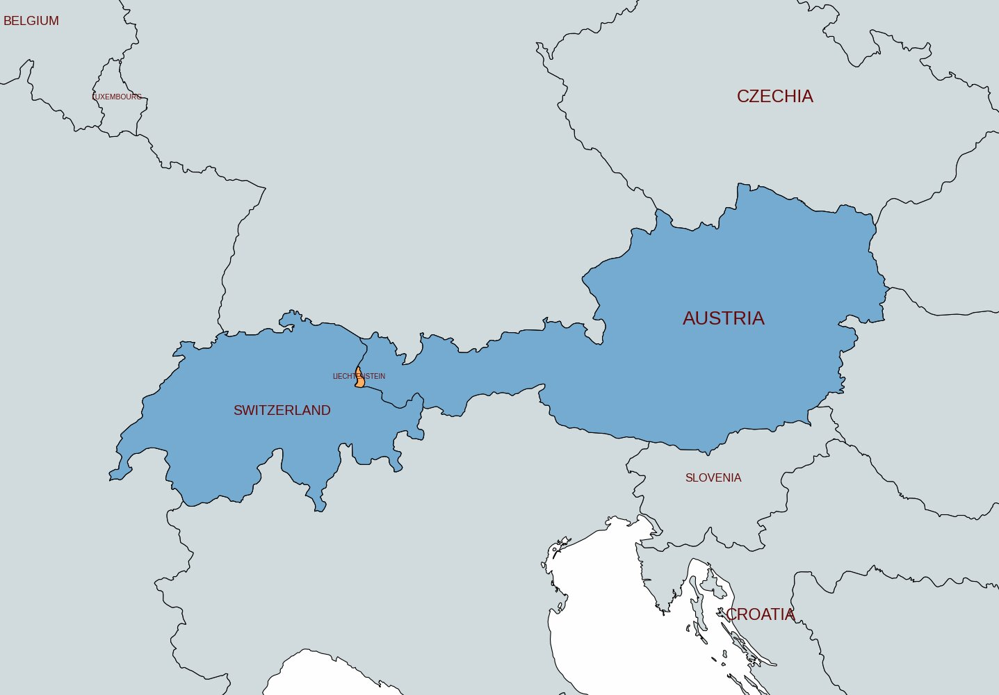
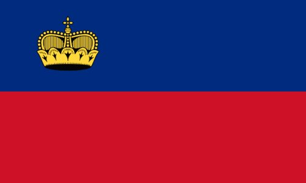
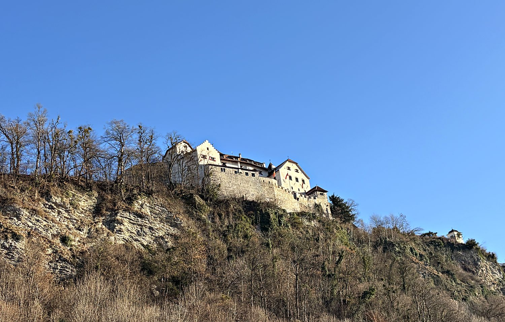
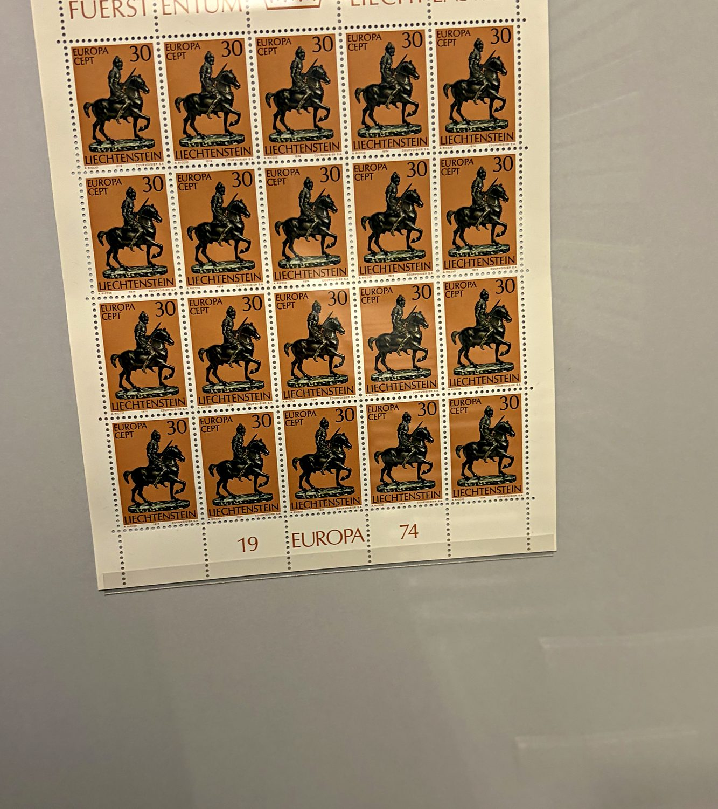
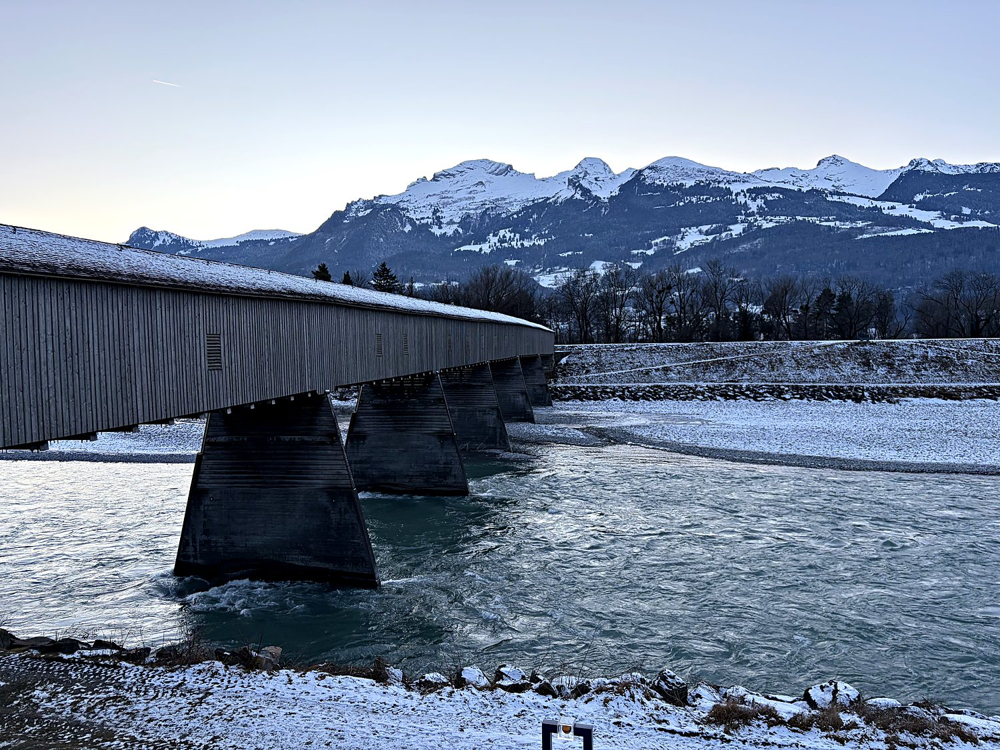

I visited Liechtenstein in January 2026, on a snow-dusted day trip with my parents from our base in Zurich. Reaching the world's sixth-smallest country turned out to be a masterclass in creative pricing. The 30-minute train from Zurich to the border town of Sargans cost us €34 each way, which felt less like a fare and more like a ransom. From there a bus to the capital charged another €5 a head for a ride that lasted about as long as it takes to read this sentence. My father's contribution to the day was more physical than financial: as he boarded the bus, the doors closed on him with the enthusiasm of a Venus flytrap, and he spent much of the afternoon nursing a bruised hip and an even more bruised ego at an American-themed café. My mom and I, hips intact, set out to explore a nation you can cross in the time it takes to lose a game of backgammon.
Vaduz, the capital, is home to only about 5,700 people, which makes it less a city than a well-organized village that happens to run a country. Its pedestrian center (the Städtle) is a tidy row of museums, cafés, and government buildings strung out beneath a castle, with the snow-capped Alps and the Rhine valley spreading out behind it in a postcard-perfect view. At the tourist office we fell into a long chat with a transplanted Brit who cheerfully summarized the state of the nation: the country is superbly well-run, the biggest local gripe is the cost of living (a complaint I could by then personally corroborate), and the reigning Prince holds sweeping powers that he mostly declines to use. It is, in other words, a place that has quietly worked out how to be tiny, rich, and content all at once.

Liechtenstein's origins are a wonderfully bureaucratic accident. In 1719, the Holy Roman Emperor Charles VI stitched together two obscure lordships (Schellenberg and Vaduz) into a new principality, which he handed to the wealthy Austrian House of Liechtenstein. The family had gone shopping for the land for a very specific reason: they were rich enough to advise emperors but lacked territory held directly under the emperor, which they needed to earn a seat in the Imperial Diet. Having acquired an entire country to upgrade their political résumé, the princes then proceeded not to visit it for well over a century. Liechtenstein is also one of only two doubly landlocked nations on Earth, an exclusive club it shares, improbably, with Uzbekistan. It has kept no army since disbanding its forces in 1868, on the sensible grounds that wars are expensive and it would rather spend its time extorting tourists.

For a country smaller than many cities, Liechtenstein is staggeringly wealthy, boasting one of the highest GDPs per capita in the world. It got there through an unlikely trio of industry, finance, and postage stamps. It is the global headquarters of Hilti (whose power tools you may have unknowingly cursed at on a construction site), and is a discreet financial center that spent decades as a low-tax haven. It uses the Swiss franc, sits in a customs and monetary union with Switzerland, and outsources its defense to its larger neighbor. The two countries are so close that in 2007, a company of Swiss soldiers got lost during a night exercise and accidentally marched a mile into Liechtenstein. The Swiss apologized; the Liechtensteiners, having failed to notice this accidental invasion, graciously accepted. The principality remains a monarchy with real teeth: a 2003 referendum handed the Prince expanded powers, including the right to veto laws and dismiss the government, making him one of Europe's most powerful royals. In exchange, the people gained the right to abolish the monarchy altogether should they ever tire of him.
Perched on a wooded crag directly above the capital, Vaduz Castle is not a museum, a ruin, or a photo op with a gift shop – it is somebody's house. The Prince of Liechtenstein and his family actually live there, which is why the gates stay firmly shut to the many tourists who file through Vaduz each year. Parts of the castle date to the 12th century, and its silhouette above the town is the closest thing the country has to a national logo. There is something charming about a head of state who can look down from his medieval fortress and survey, in a single glance, the majority of his realm.

If Vaduz Castle represents Liechtenstein's aristocratic past, the Postmuseum represents its stranger claim to fame. This small museum celebrates the humble postage stamp, which for much of the 20th century was one of the principality's most reliable sources of income. After Liechtenstein began issuing its own beautifully engraved stamps in 1912, collectors around the world developed an appetite for them so voracious that stamp sales at one point funded a meaningful slice of the national budget. In Liechtenstein, even the mail turned a profit.

To end the day I walked down to the Alte Rheinbrücke, a covered wooden bridge that has spanned the Rhine between Liechtenstein and the Swiss town of Sevelen since 1901. It is the last surviving wooden bridge across the Rhine along the entire border, and walking through its dim timber tunnel I was able to stroll, passport-free and toll-free, straight out of one country and into another. From the middle, with the half-frozen river below and the snow-lined Alps glowing in the late afternoon light, it was easy to see why this quiet, improbable little nation seems in no hurry to be anything other than exactly what it is.
